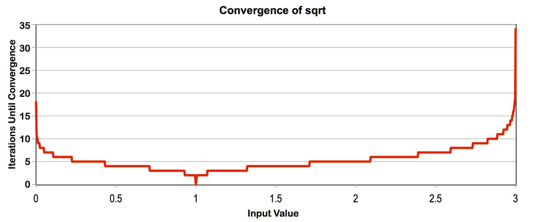

P4 · Iterative square root¶
Compute square roots for 20 million floats with eight-wide SIMD and 64 tasks. Newton iteration starts from a guess of 1; input 1 converges immediately, while 2.999f requires many iterations. All tested inputs pass the supplied 1e-4 absolute-error check.

Iteration count with an initial guess of 1 (handout).
1. Measure SIMD and multicore speedup¶
With the original random input:
| Implementation | Time (ms) | Speedup over serial |
|---|---|---|
| Serial | 546.799 | — |
| ISPC | 141.842 | 3.85× |
| Task ISPC | 12.157 | 44.98× |
Multicore execution gives 11.67× speedup over single-core ISPC.
2. Increase relative speedup¶
Setting every value to 2.999f keeps all lanes active for the same number of iterations. This improves SIMD utilization and amortizes fixed overhead.
| Implementation | Time (ms) | Speedup over serial |
|---|---|---|
| Serial | 1021.521 | — |
| ISPC | 228.431 | 4.47× |
| Task ISPC | 21.691 | 47.09× |
These are the highest relative speedups among the tested inputs. The additional multicore factor is 10.53×, slightly below the random-input result. Uniform lane workloads benefit both ISPC versions, so their ratio changes much less than the serial-to-SIMD ratio.
3. Decrease relative speedup¶
Repeat groups of one 2.999f and seven 1.f values. One lane keeps the SIMD loop running while seven lanes are inactive. Serial execution performs the long iteration for only one element in each group.
| Input | Serial (ms) | ISPC (ms) | Tasks (ms) | Serial / ISPC | Serial / tasks |
|---|---|---|---|---|---|
| One slow, seven fast | 146.701 | 228.311 | 22.896 | 0.64× | 6.41× |
All 1.f |
10.613 | 6.486 | 2.944 | 1.64× | 3.60× |
The mixed input leaves ISPC time close to the all-2.999f case while greatly reducing serial work. For all-1 input, a cheap serial baseline reduces speedup, while uniform lane workloads avoid divergence.
4. Extra credit: AVX2 intrinsics¶
sqrtAVX2 in sqrtAVX2.cpp:
#include <immintrin.h>
#include <climits>
void sqrtAVX2(int N,
float initialGuess,
float values[],
float output[])
{
static const __m256 kThreshold = _mm256_set1_ps(0.00001f);
__m256 x;
__m256 guess1;
__m256 guess2;
__m256 guess3;
__m256 error;
for (int i=0; i<N; i+=8) {
x = _mm256_loadu_ps(values+i);
guess1 = _mm256_set1_ps(initialGuess);
guess2 = _mm256_mul_ps(guess1, guess1);
error = _mm256_fmsub_ps(guess2, x, _mm256_set1_ps(1.f));
error = _mm256_and_ps(error,
_mm256_castsi256_ps(_mm256_set1_epi32(INT_MAX)));
while (_mm256_movemask_ps(
_mm256_cmp_ps(error, kThreshold, _CMP_GT_OQ))) {
guess3 = _mm256_mul_ps(guess2, guess1);
guess1 = _mm256_sub_ps(
_mm256_mul_ps(_mm256_set1_ps(3.f), guess1),
_mm256_mul_ps(x, guess3));
guess1 = _mm256_mul_ps(guess1, _mm256_set1_ps(0.5f));
guess2 = _mm256_mul_ps(guess1, guess1);
error = _mm256_fmsub_ps(guess2, x, _mm256_set1_ps(1.f));
error = _mm256_and_ps(error,
_mm256_castsi256_ps(_mm256_set1_epi32(INT_MAX)));
}
_mm256_storeu_ps(output+i, _mm256_mul_ps(x, guess1));
}
}
4.1 Load eight independent inputs¶
__m256 holds eight 32-bit floats. loadu loads eight consecutive values without requiring alignment; set1 broadcasts the initial guess. The function assumes N is divisible by eight, as it is for the 20-million-element input.
4.2 Update the reciprocal-square-root estimate¶
For one input x, the iteration solves f(g) = 1/g² - x = 0, so g approaches 1/sqrt(x). Substituting f'(g) = -2/g³ into Newton's update gives:
g_new = g - f(g) / f'(g)
= (3*g - x*g³) / 2
sqrt(x) = x * (1/sqrt(x)) ≈ x * g
The vector variables follow this calculation lane by lane:
| Variable | Value in one lane |
|---|---|
x |
Input, unchanged during iteration |
guess1 |
Current estimate g |
guess2 |
g², reused in the error test and next update |
guess3 |
g³, formed from guess2 * guess1 |
error |
Residual abs(x * g² - 1) |
4.3 Compute the absolute residual¶
_mm256_fmsub_ps evaluates guess2 * x - 1 with fused multiply-subtract, rounding once for the combined operation.
INT_MAX supplies the pattern 0x7fffffff. The cast preserves this bit pattern, and _mm256_and_ps clears each residual's sign bit to obtain its absolute value. The convergence threshold is 1e-5.
4.4 Turn eight comparisons into one loop condition¶
_mm256_cmp_ps tests error > kThreshold in each lane. With _CMP_GT_OQ, a true comparison produces 0xffffffff and a false comparison produces zero. _mm256_movemask_ps gathers the sign bit of each result into an integer, with lane 0 becoming bit 0. Thus the integer is nonzero whenever any lane still needs work. See the AVX intrinsic definitions.
Lane 0 1 2 3 4 5 6 7
Input 2.999 1 1 1 1 1 1 1
Needs another iteration? 1 0 0 0 0 0 0 0
|
v
movemask = 00000001 (binary) -> continue
movemask = 00000000 (binary) -> exit
The mask controls the whole while loop; arithmetic still updates all eight lanes. The seven fast lanes stay at g = 1, while the 2.999f lane determines the iteration count.
4.5 Performance¶
Fresh measurements for 20 million values, with both single-core implementations pinned to the same P core of the local i9-13900H. The C++ build uses GCC 13.3 with -O3 -march=native; ISPC 1.28.1 uses avx2-i32x8.
| Input | ISPC (ms) | AVX2 (ms) | ISPC / AVX2 |
|---|---|---|---|
| Random | 197.448 | 132.162 | 1.49× |
All 2.999f |
385.246 | 153.689 | 2.51× |
| One slow, seven fast | 318.797 | 153.611 | 2.08× |
All 1.f |
6.901 | 6.983 | 0.99× |
All four inputs pass the 1e-4 absolute-error check with finite outputs. The all-2.999f ISPC times range from 318 to 451 ms across the three runs. All-1 input skips the iteration loop, leaving little arithmetic overhead to remove.
4.6 Generated assembly¶
The AVX2 iteration loop, in Intel syntax. On entry, ymm0 holds guess1, ymm1 holds guess2, and ymm3 holds x:
.L7:
vmulps ymm1, ymm0, ymm1 ; guess3 = guess1 * guess2
vmulps ymm0, ymm0, ymm8 ; 3 * guess1
vfnmadd132ps ymm1, ymm0, ymm3 ; 3 * guess1 - x * guess3
vmulps ymm0, ymm1, ymm7 ; new guess1 = above * 0.5
vmulps ymm1, ymm0, ymm0 ; guess2 for error and next iteration
vmovaps ymm2, ymm1
vfmsub132ps ymm2, ymm5, ymm3 ; guess2 * x - 1
vandps ymm2, ymm2, ymm4 ; absolute error
vcmpps ymm2, ymm2, ymm6, 30 ; error > threshold
vmovmskps eax, ymm2
test eax, eax
jne .L7
The corresponding ISPC loop:
.LBB3_11:
vmulps ymm13, ymm9, ymm12 ; x * guess
vmulps ymm13, ymm12, ymm13 ; x * guess * guess
vmulps ymm13, ymm12, ymm13 ; x * guess * guess * guess
vfmsub231ps ymm13, ymm12, ymm7 ; 3 * guess - above
vmulps ymm13, ymm13, ymm8 ; new guess
vblendvps ymm12, ymm12, ymm13, ymm11 ; update active lanes
vmulps ymm13, ymm12, ymm12
vfmadd213ps ymm13, ymm9, ymm4 ; guess * guess * x - 1
vandps ymm13, ymm13, ymm5 ; absolute error
vblendvps ymm10, ymm10, ymm13, ymm11 ; update active lanes
vcmpltps ymm13, ymm6, ymm10
vtestps ymm13, ymm11
vandps ymm11, ymm13, ymm11 ; retain unfinished lanes
jne .LBB3_11
The AVX2 loop reuses g² from the error calculation to form g³ directly. ISPC builds x*g, x*g², and x*g³ through three dependent multiplications. Reusing the square shortens this dependency chain.
ISPC uses two vblendvps instructions to preserve finished lanes and a final vandps to maintain the active mask. AVX2 updates every lane and needs only an any-lane test, removing these selection operations while retaining the slowest-lane iteration count.
Both versions use eight-wide arithmetic and FMA. The shorter update chain and simpler lane handling explain the AVX2 improvement on iterative inputs.